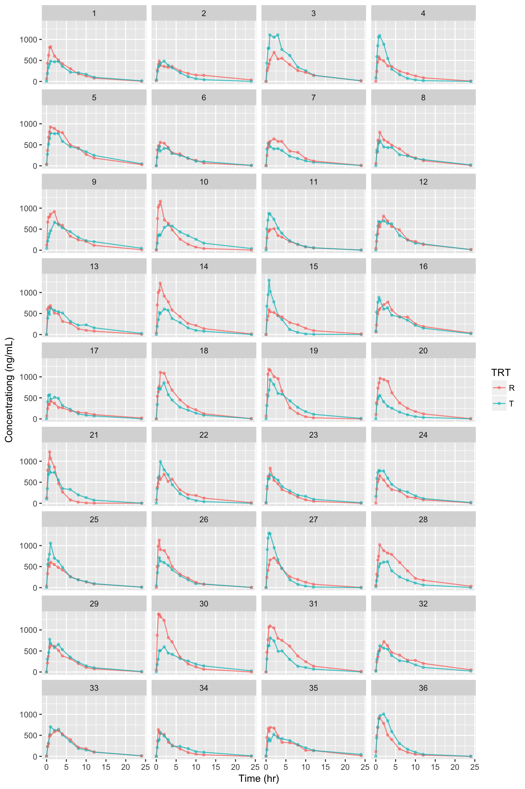

NonCompart 패키지를 사용해서 2x2 생동성시험의 분산분석 등을 손쉽게 해주는 패키지입니다. 지원하는 계산은 다음과 같습니다.
| parameters | statistics |
|---|---|
AUClast |
Analysis of variance, between and within subject variability, least square means, confidence interval, and sample size |
Cmax |
Analysis of variance, between and within subject variability, least square means, confidence interval, and sample size |
Tmax |
Wilcoxon Signed-Rank Test and Hodges-Lehmann Estimate |
설치
install.packages('devtools')
devtools::install_github('asancpt/ncarbe')실행
예제 데이타 (시뮬레이션 데이타)
2x2 생동성시험 디자인으로 36명의 데이타를 생성하여 시뮬레이션 한 것입니다. (배균섭 교수님 pk1coma.R 사용)
file <- system.file('example', 'beConc.csv', package = 'ncarbe')
concData <- read.csv(file, as.is = TRUE)
head(concData)## SUBJ GRP PRD TRT nTIME TIME CONC
## 1 1 RT 1 R 0.00 0.02 63.42
## 2 1 RT 1 R 0.25 0.24 432.76
## 3 1 RT 1 R 0.50 0.51 622.88
## 4 1 RT 1 R 0.75 0.80 809.93
## 5 1 RT 1 R 1.00 1.02 824.34
## 6 1 RT 1 R 2.00 2.04 602.22자료 탐색
그림을 그려보면 다음과 같습니다.
library(ggplot2)
library(dplyr)
concData %>%
ggplot(aes(x = TIME, y = CONC, group = TRT, color = TRT)) +
geom_line(size = 0.5, alpha = 0.8) +
geom_point(size = 1, alpha = 0.5) +
xlab('Time (hr)') +
ylab('Concentrationg (ng/mL)') +
facet_wrap( ~ SUBJ, ncol = 4)
생동성 분석
beNCA() 함수를 사용하여 분석한 결과입니다.
method = ‘kbe’
library(ncarbe)## Warning: replacing previous import 'dplyr::collapse' by 'nlme::collapse'
## when loading 'ncarbe'beNCA(concData) # method = 'kbe'##
##
## [AUClast]
##
## $`Analysis of Variance`
## SS DF MS F p
## SUBJECT 2.8102897 35 0.08029399 2.049048 0.01947896
## GROUP 0.2811516 1 0.28115157 3.779609 0.06019307
## SUBJECT(GROUP) 2.5291381 34 0.07438642 1.898290 0.03291404
## PERIOD 0.2887407 1 0.28874073 7.368465 0.01035002
## DRUG 0.1186721 1 0.11867210 3.028430 0.09086256
## ERROR 1.3323243 34 0.03918601 NA NA
## TOTAL 4.5500268 71 NA NA NA
##
## $`Between and Within Subject Variability`
## Between Subject Within Subject
## Variance Estimate 0.0176002 0.03918601
## Coefficient of Variation, CV(%) 13.3251642 19.99097469
##
## $`Least Square Means`
## Reference Drug Test Drug
## Geometric Means 5047.026 4648.063
##
## $`90% Confidence Interval`
## Lower Limit Point Estimate Upper Limit
## 90% CI for Ratio 0.8501323 0.920951 0.9976692
##
## $`Sample Size`
## True Ratio=1 True Ratio=Point Estimate
## 80% Power Sample Size 8 13
##
##
##
## [Cmax]## Warning in sqrt(exp(sig2b) - 1): NaN이 생성되었습니다## $`Analysis of Variance`
## SS DF MS F p
## SUBJECT 2.85581816 35 0.08159480 0.9764709 0.5283290
## GROUP 0.08840271 1 0.08840271 1.0861008 0.3046908
## SUBJECT(GROUP) 2.76741545 34 0.08139457 0.9740747 0.5302983
## PERIOD 0.04931289 1 0.04931289 0.5901430 0.4476669
## DRUG 0.10908566 1 0.10908566 1.3054627 0.2612001
## ERROR 2.84107119 34 0.08356092 NA NA
## TOTAL 5.85528790 71 NA NA NA
##
## $`Between and Within Subject Variability`
## Between Subject Within Subject
## Variance Estimate -0.001083173 0.08356092
## Coefficient of Variation, CV(%) NaN 29.52142270
##
## $`Least Square Means`
## Reference Drug Test Drug
## Geometric Means 791.1619 731.1
##
## $`90% Confidence Interval`
## Lower Limit Point Estimate Upper Limit
## 90% CI for Ratio 0.8221796 0.924084 1.038619
##
## $`Sample Size`
## True Ratio=1 True Ratio=Point Estimate
## 80% Power Sample Size 16 26
##
##
##
## [Tmax]
##
## $`Wilcoxon Signed-Rank Test`
## p-value
## 0.3059991
##
## $`Hodges-Lehmann Estimate`
## Lower Limit Point Estimate Upper Limit
## 90% Confidence Interval -0.10000 0.0300 0.405
## 90% Confidence Interval(%) 92.18517 102.3444 131.650method = ‘nlme’
beNCA(concData, method = 'nlme')## $Confidence.Interval
## # A tibble: 2 x 4
## parameter `Lower limit of 90% CI` `T/R ratio` `Upper limit of 90% CI`
## <chr> <dbl> <dbl> <dbl>
## 1 Cmax 0.8226291 0.924084 1.0380513
## 2 AUClast 0.8488229 0.920951 0.9992081Reference
Bae K (2017). NonCompart: Noncompartmental Analysis for Pharmacokinetic Data. R package version 0.3.3, https://CRAN.R-project.org/package=NonCompart.
Bae K and Han S (2017). ncarbe: Perform BE Test Using NonCompart Package. R package version 0.1.0.
Pinheiro J, Bates D, DebRoy S, Sarkar D and R Core Team (2017). nlme: Linear and Nonlinear Mixed Effects Models. R package version 3.1-131, https://CRAN.R-project.org/package=nlme.